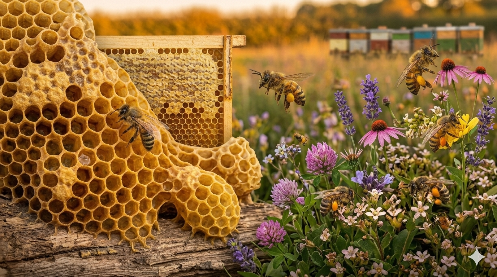
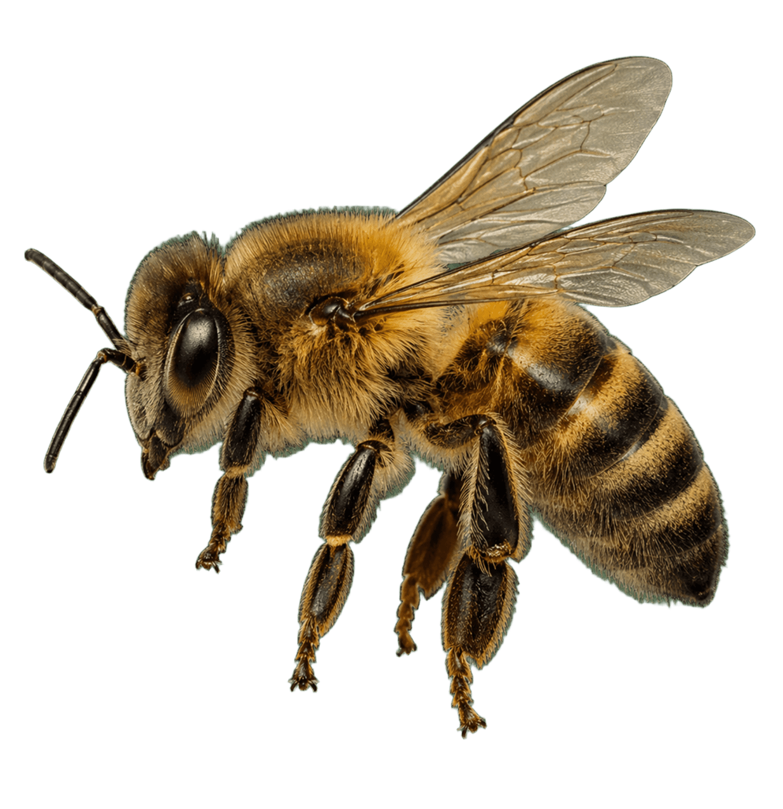
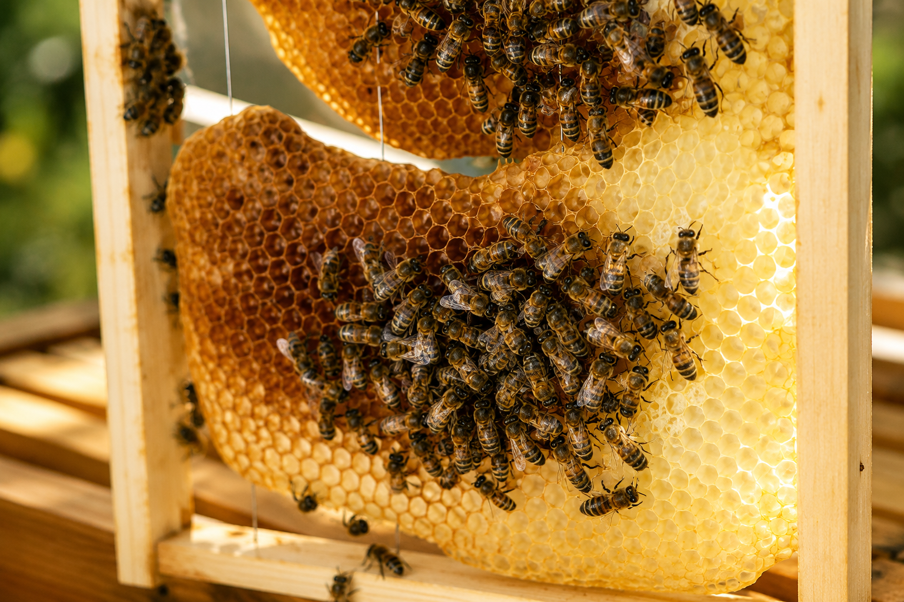
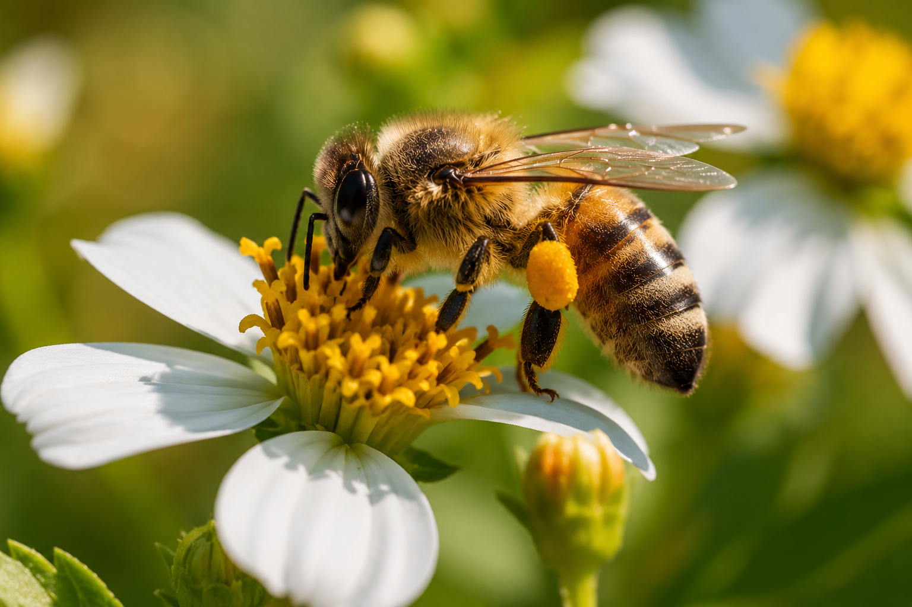
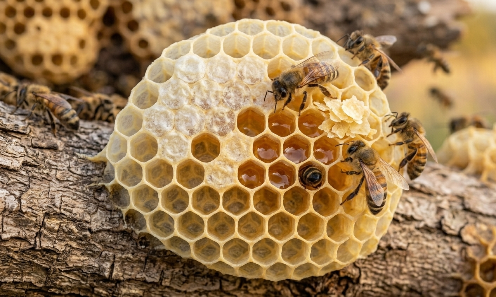
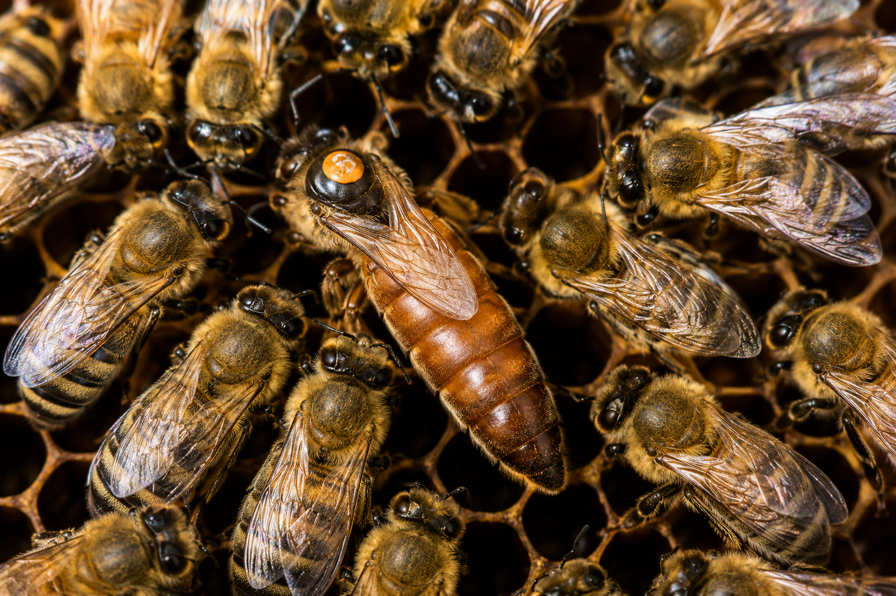
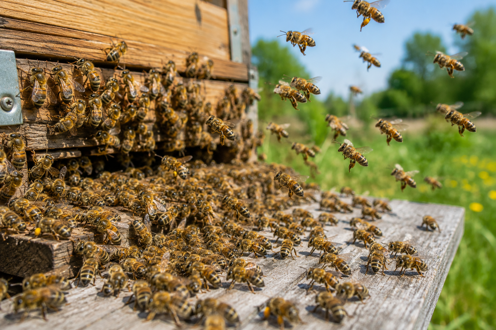
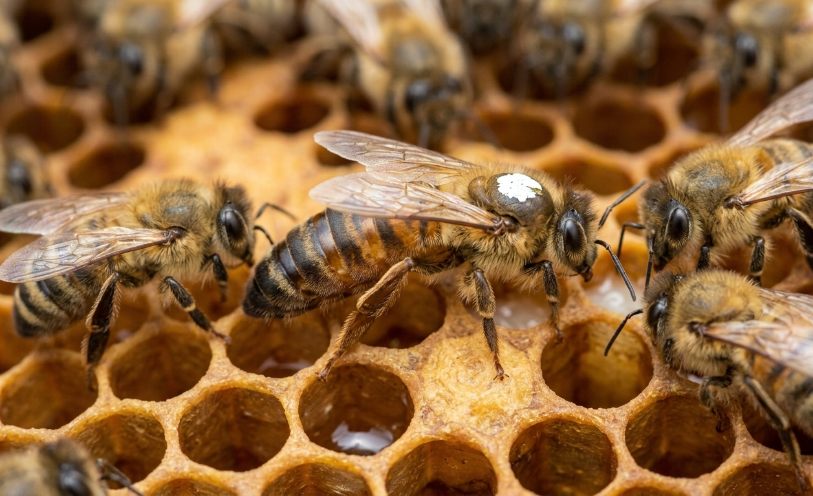
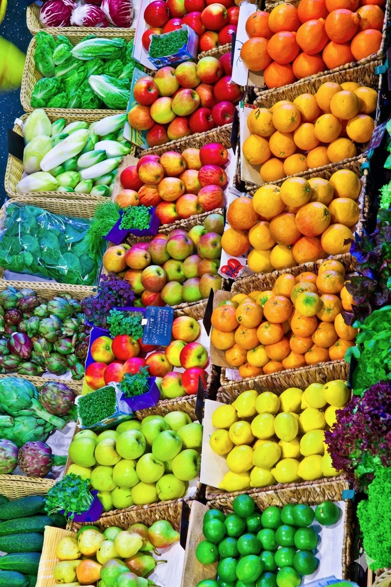
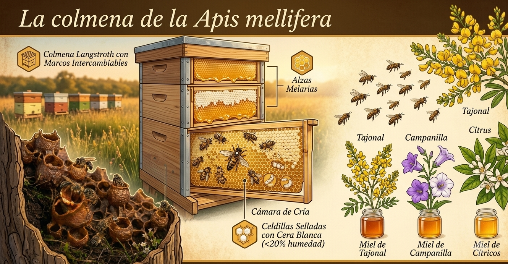

🐝'">La abeja doméstica más conocida del mundo. Pilar de la apicultura moderna, gran productora de miel y polinizadora esencial de cultivos en los cinco continentes.
La Apis mellifera, conocida como abeja melífera o abeja europea, es el insecto polinizador más estudiado y criado en el mundo. Originaria de Europa, África y Asia occidental, fue introducida en América con la colonización española y hoy es la especie dominante en la apicultura comercial global.
A diferencia de las Meliponinas nativas, la Apis mellifera posee aguijón funcional que usa para defender su colonia. Vive en colonias enormes de hasta 80,000 individuos, construye sus panales con cera de abejas y puede producir entre 20 y 80 kg de miel al año por colmena bajo condiciones óptimas.








Son responsables de la polinización de más de un tercio de los alimentos que consumimos. Su salud es directamente nuestra seguridad alimentaria.




La colmena de la Apis mellifera puede construirse en cavidades naturales (huecos de árbol, grietas de roca) o en cajas-colmena diseñadas por el apicultor. La más utilizada en México es la colmena Langstroth, con marcos intercambiables de cera estampada que facilitan la inspección y la cosecha sin destruir el nido.
Adentro encontramos la cámara de cría —donde la reina pone hasta 2,000 huevos al día— y las alzas melarias donde las obreras depositan y maduran el néctar. Las celdillas se sellan con cera blanca cuando la miel alcanza menos del 20 % de humedad, garantizando su conservación natural.
La miel de Apis mellifera es más densa y de sabor más dulce que la de la melipona, con un amplio rango de aromas según las flores visitadas. En Tabasco, las floraciones de tajonal, campanilla y cítricos producen mieles de color ámbar claro con notas florales y afrutadas muy apreciadas en el mercado.
Explora nuestra tienda de productos de la colmena o visita nuestro centro de rescate si encontraste un enjambre. Los reubicamos y les damos un nuevo hogar.